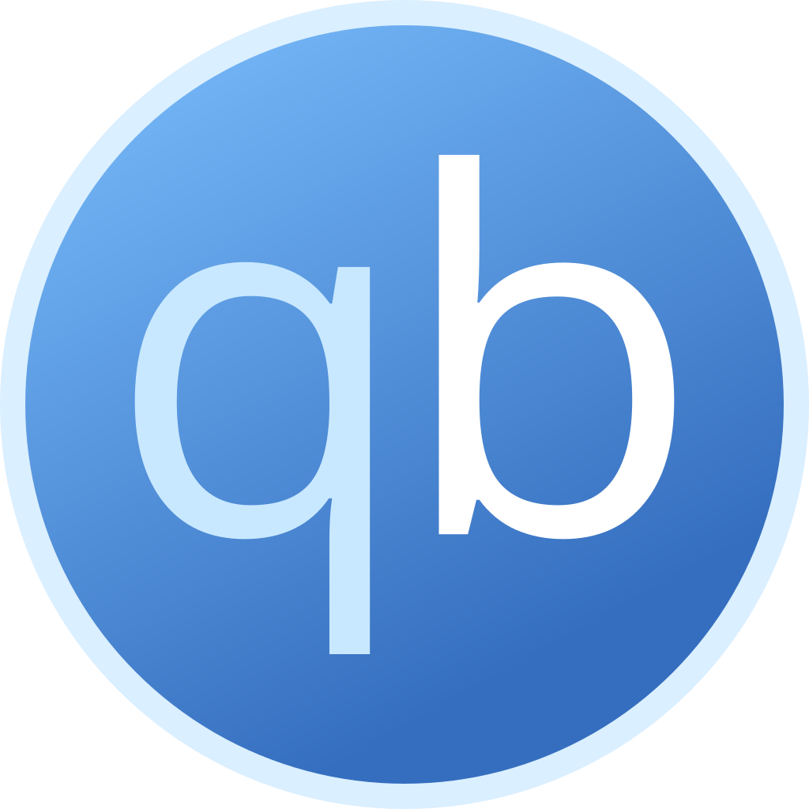

#
Anime Megathread
Everrything Anime Related!
If you want to get the best quality, use Direct Download, IRC, or Torrent. You can obtain full web release quality on a streaming site that scrapes the official site API, such as KickAssAnime for Crunchyroll and Bilibili content. Otherwise, it is hard to maintain the full quality while managing space & traffic. You can network stream files from direct download, irc and torrents.
#
Stream
- Aniwave
Anix
Alt UI
formerly 9anime
- Huge library with Watch Together feature
- Less amount of compression compared to other sites that use 3rd party hosts
- Marin
- Re-encodes files of other encoder groups while keeping the quality consistent
- Uploads encoded Blu-ray versions if available
- Clutter-free design and no watermark
- Marin has a good amount of missing titles, especially movies
- KickAssAnime
Proxies
- Scrapes Crunchyroll(duckstream) and Bilibili(birdstream)
- KAA encodes(videstreaming) are decent with lower overall bitrate. Use the previous two if available. Duck has the highest overall bitrate
- Has both hardsub(duck) & softsub(rest)
- Still a beta site and has missing titles. But, you can request them in their support server
- Aniwatch
formerly Zoro
- Huge library with Watch Together feature
- Re-encodes shows for smaller size with lower overall bitrate.
- Softsubs may create issues in different scenarios, but can be beneficial for multi-language support
- Animepahe
- Uploads mini encoded files, useful if you want smaller files or have low bandwidth
- Uploads Blu-ray and DVD versions if available
- Has a good amount of missing titles
- Animeflix
- AnimeUI IPFS Small library Great Quality
- Kaguya Needs extension
- One Pace Streamio Direct Stream Torrent
- Pokémon TV Github Multi-lang
- AnimeXin Donghua
- Lucifer Donghua Donghua
- LM Anime Donghua
- Myanime Donghua
- Muse Asia Legal Regional
- Ani-One Asia Legal Regional
#
Direct Download
- Tokyo Insider Direct no ad
- Anime out Direct no ad
- Judas GDrive no ad
- hi10anime Direct ad
- Anime Senpai GDrive Mega no ad
- Kayo anime GDrive no ad
- Chauthanh Direct no ad
- Anime time GDrive ad
- RIP Crabby Anime GDrive no ad
- JPFiles Blu-ray Misc Host
- JPLearner Blu-ray Misc Host
- AnimeRSS Blu-ray Host
To download in Android, use
1DM ,
FDM or ADM . For PC, use
IDM , JDL or
#
IRC
- nibl
- Server:
irc.rizon.net - Port:
6697 - Channel:
#nibl
- Server:
- subsplease
- Server:
irc.rizon.net - Port:
6697 - Channel:
#subsplease
- Server:
- madokami
- Server:
irc.rizon.net - Port:
6697 - Channel:
#madokami
- Server:
- animk
- Server:
irc.xertion.org - Port:
6697 - Channel:
#MKorXDCCLeech
- Server:
- XDCC EU
- SunXDCC
- Anidex (
Michikobot is over at#Doki)
To learn how to use IRC, you can read the guide.
#
Torrents
- Nyaa Proxy 1 Proxy 2
- Animek
- Anime Tosho DDL
- Anidex
- Anirena
- Shana Project | Tokyo tosho
- Anime Bytes Private tracker
- Baka BT Private tracker
- U2 Private tracker
For torrent related terms, click here.
Recommended torrent client for Android is
libretorrent . For Windows, Linux & macOS, use  qBittorrent or Transmission .
For VPN, use
Mullvad or IVPN . If you want free alternative, use
Windscribe .
All the Legal anime streaming services are listed here.

#
Software
#
Android
- Saikou
TV
Web
- Decent UI but limited customization
- Can be used offline
- Also offers manga reader & ln
- Anime streaming/reading only
- Anilist and MAL sync
- Cloudstream
- Minimalist Customizable UI
- Offers other types of media too
- Tracking & backup support
- Local player support
- need to be part of the discord server to get the extension urls
- Aniyomi
Web
Manga
- Tachiyomi fork for anime
- Clean and minimal design
- Offers other types of media too
- Has manga reader too
- Tracking support with enhanced type
- Kaizoyu!
Web
- Uses XDCC to stream files
- Good video quality since it's scrapping a DDL source
- Great app UI
- Has some issues such as missing episodes, mismatch, buffering issue
- Animiru Anime only RPC
- Animity
- Enimax
- Anime Scrap
#
PC
- Miru
- Torrent based
- Pretty good UI with schedule and advanced search
- Has AL tracking and RSS feed
- Can stream external magnet link and it'll auto detect the anime.
#
iOS
- Anime Now
- Great UI with extension support
- Downloading episode is supported support
- Casting support
- Tracking support
- Only available trough sideloading
- 9Animator
- Decent UI with extension integration
- Casting & notification support
- Tracking support
- Downloading episode available
- Small number of extensions
- Only available trough sideloading
#
Others
#
Downloaders
#
Info

#
Others
#
Music
#
Stream
#
Direct Download
- Sitting on Clouds FLAC Mega Mediafire
- SquidBoard Needs account FLAC Mega Mediafire GDrive
- Sukidesu OST FLAC Mega
- Asia Media Blog FLAC Host
- OS Anime Direct
- Hiyori OST GDrive Host
- Sakura OST Host
#
Tools
#
Analysis
- anime.plus Github MAL
- MAL Badges MAL
- Sekai Github MAL
- Sprout Anime Recommender MAL AL
#
Image search
#
Trackers
#
Android and iOS
#
Windows
#
MacOS
#
Linux
#
Browser
#
Miscellaneous
#
Non English
#
Multi
- Aniwatch
aka Zoro - Kickassanime
#
Arabic
#
Balkan
#
Bangla
#
Chinese
- 555dy1 BD
- AGE
- Bimibimi
- CC
- ddys
- MoMoVod
- Tangrenjie
- XG Cartoon
- Yinghuacd
- ysgc
- Bangumi Torrent
- Mikanani Torrent
- MioBT Torrent
- ACG Torrent
- ACGNX DDL Torrent
- Anime Tracker List Misc
#
French
#
German
- Anime Archive
- AniWorld
- Aniflix
- Anime Loads Stream DDL
- Animes DDL
- AnimeWorld Torrent
#
Greek
- An1me (Adblock filter
an1me.to##+js(acis, Math))
#
Indian
- Dead Toons
- PureToons
- Anime Academy DDL
- Toonworld4all DDL
- Toonworld Tamil DDL
#
Indonesian
- Anichin
- Anime Indo
- AnimeForce
- AnimeSail
- Anoboy
- Kazefuri
- Kuramanime
- Mynimeku
- Neonime
- Ryukonime Github
- Kusonime DDL
#
Italian
#
Polish
- Anime Odcinki
- Anime Zone
- Desu Online
- Docchi Github
- Dragon Subs
- Frixy Subs
- Fumetsu
- Mior Subs
- Nana Subs
- Okami-subs
- Wbijam
#
Portuguese
- Anime Fire
- Anime Online HD
- Animes Zone
- Better Anime
- Anime Kage DDL
- Kero Seed Torrent
#
Romanian
#
Russian
- Akari Anime
- Anidub
- Anifilm
- Anilibria Sub
- Anime Buff Sub
- Anime Stars Sub
- AnimeGO Sub
- Averlist Github
- Dreamcast
- Freedub Studio
- Sovet Romantica Sub
- Tunime Github Sub
- Yummy Anime
- Anime Slayer Torrent
- Dark Libria Stream DDL
#
Slovak
#
Spanish
- Animeblix
- AnimeFLV | .net
- JKAnime
- Mundo Donghua
- OtakusTV
- Tio Donghua
- Sphin X Anime DDL
- Japan Paw DDL
- Ivanime DDL
- DW Anime DDL
- Frozen Layer Torrent